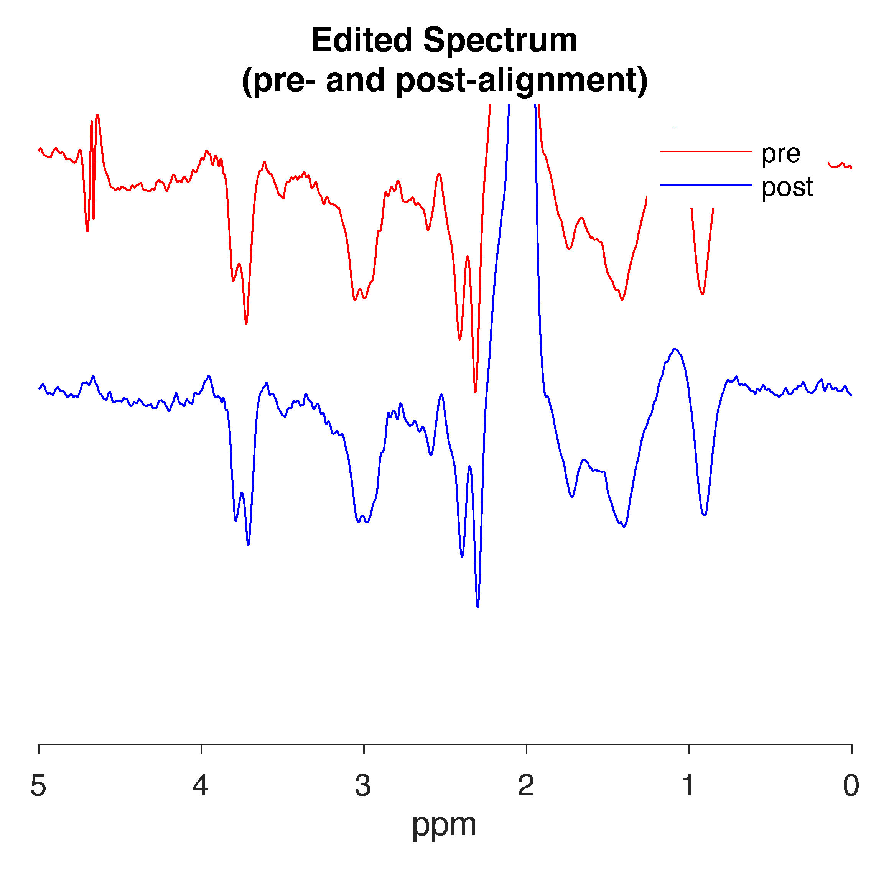

WEBSITE UNDER DEVELOPMENT – CONTENT INCOMPLETE
Example:

The ONOFForder parameter set in GannetPreInitialise.m is incorrect for your data. Change the setting to either 'onfirst' or 'offfirst', depending on what it is currently set as.
Subscripted assignment dimension mismatch?This is one of the errors that may appear during batch processing if acquisition parameters are not consistent across datasets.
Unable to perform assignment because the size of the left side is 1-by-#### and the size of the right side is 1-by-###?You are batch processing multiple datasets that contain different number of averages. Divide the files into separate batches so that each batch contains only files of the same number of averages.
Yes, Gannet can process GABA-, GSH-, and Lac-edited MEGA-PRESS data as well as HERMES data. Simply set the appropriate target option(s) in GannetPreInitialise.m.
Yes, Gannet can process phantom data. Make sure to set phantom to 1 under ‘Flags’ in GannetPreInitialise.m. If you want to fit your data, then run GannetFitPhantom(MRS_struct); instead of GannetFit(MRS_struct);.
Built with R Markdown and RStudio.
Copyright © 2020 Mark Mikkelsen. All rights reserved.